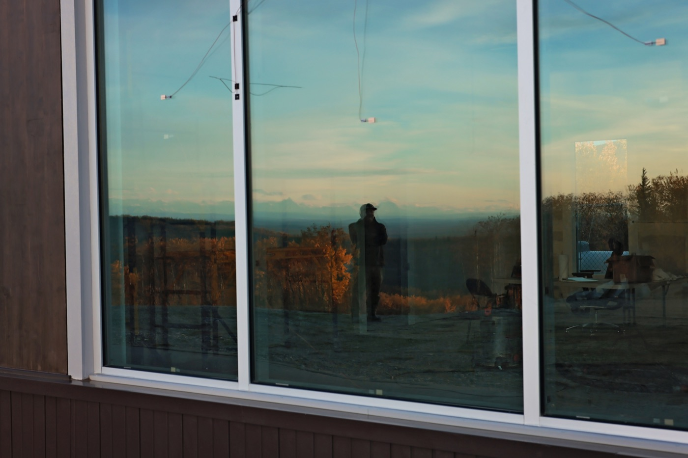
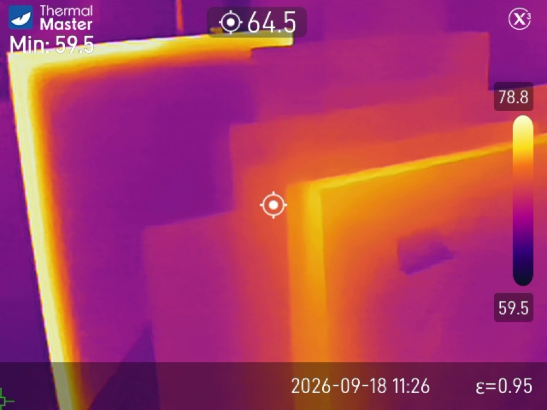
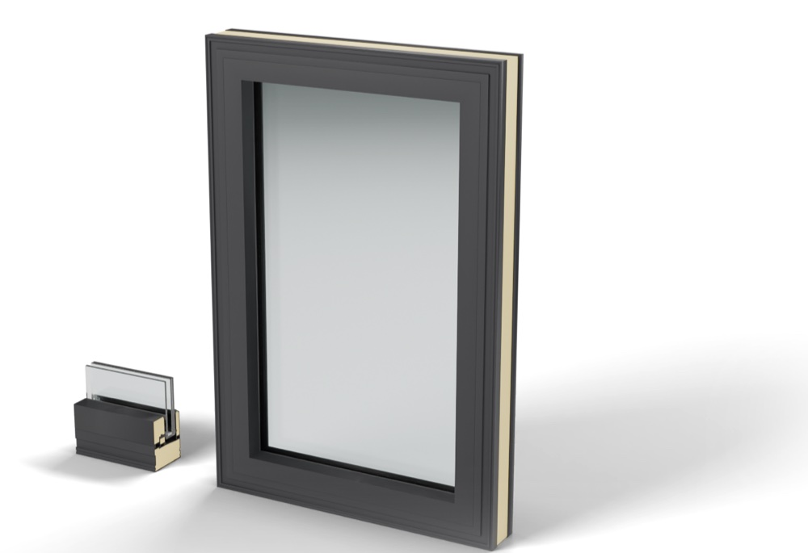
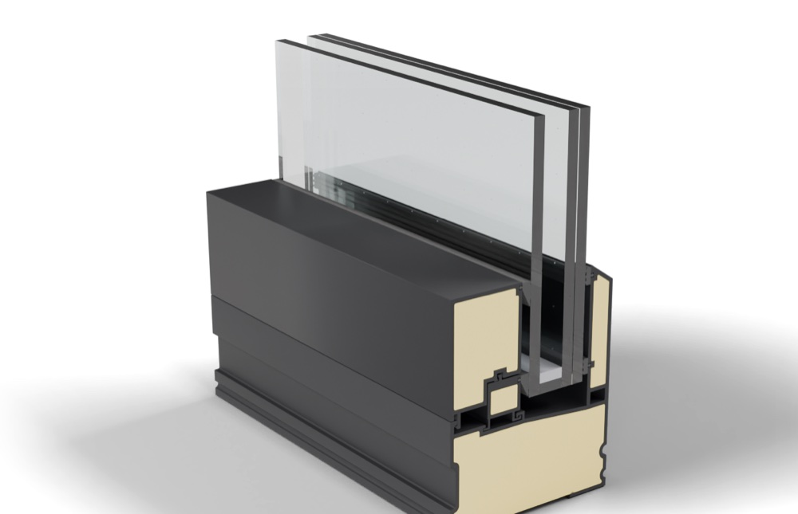
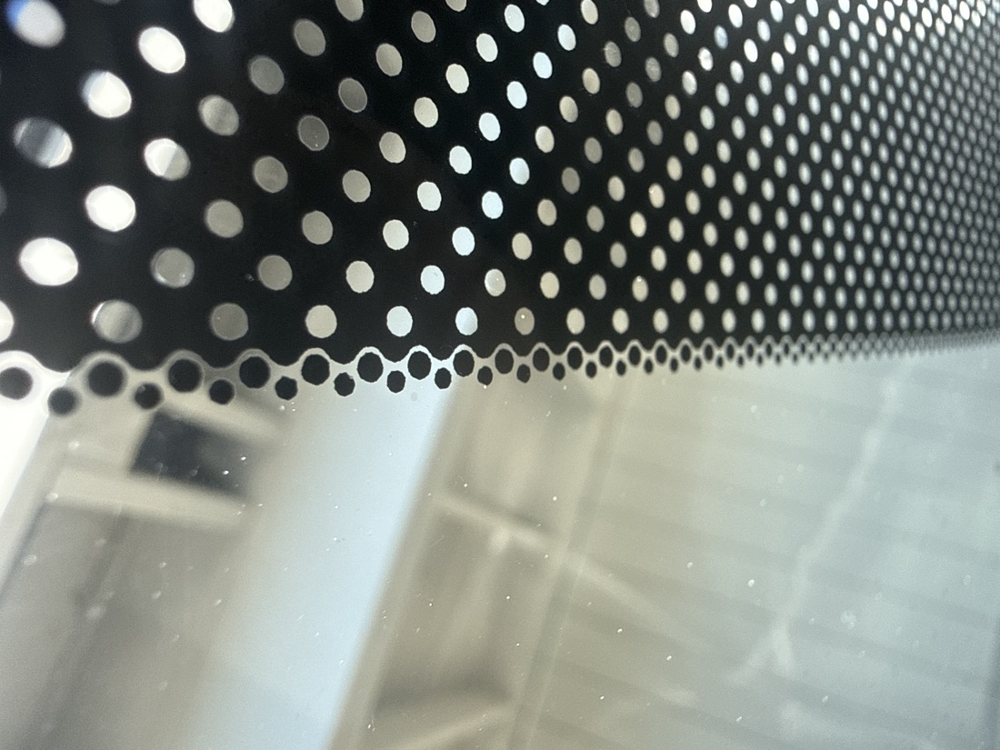
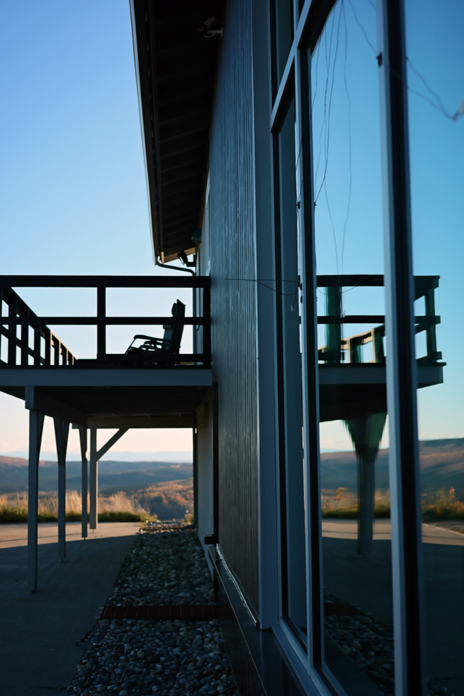
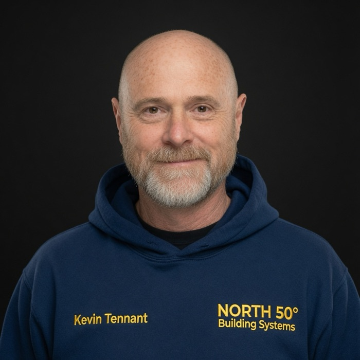

What works here,
works anywhere.
The element that admits a feeble winter sun while exacting a heavy toll in heat loss.

The best part of a vacuum window is the nothing between two panes of tempered glass.
Adding layers or complexity does not improve performance. Vacuum refuses to move heat. Atmospheric pressure, however, hates vacuum.
Center of glass. Whole-window numbers are lower.
We are testing Vacuum Insulated Glass Integrations in Alaska’s proving ground. Two walls sit in a Fairbanks lab, wired with sensors. This is the outside air and the inside glass, updated every 15 minutes.
This is our live lab page. Real readings, every 15 minutes.
Applying arctic, real world testing, the Laws of Clear Thinking and the scientific method, we qualify not the survivors, but the thrivers.
Window systems and components worthy of N50 Qualified: unmatched thermal efficiency, durability, and peace of mind.
Built for Alaska’s harshest realities, for use in any climate. If it performs in Fairbanks, Alaska, it will confidently perform anywhere.
Most conventional frames are designed around aesthetics and maximum visible glass. Overall U-value is rarely treated as the primary design driver. Until vacuum insulated glass arrived, the frame was rarely the weakest link.
Our goal is a complete cold-climate assembly, designed to survive thermal cycling and to stay manufacturable, installable and maintainable. Two designs are in development: the Shameless and the Jumbo.
We are also working on systems to retrofit existing vinyl frames suitable for an upgrade, so the switch to vacuum glass is affordable for any home.


Why Fairbanks? Keeping heat on one side of a window isn’t exclusively an issue for Arctic climes.
Insulation keeps heat in or out, lowering the cost of holding the temperature inside the building.
Whether you are heating or cooling, high performance insulation is purchased once, while utility bills come due monthly. Buy once, cry once.

The test wall from inside the lab.

The lab from outside, with sensor wires on the glass.
Our charter does not diminish the glazing businesses already operating in Alaska.It completes them.
We are finishing the supply chain that has never existed here.
High-performance glass that now arrives at high cost from the Lower 48 is tempered, completed, qualified and distributed from Fairbanks. Local fabricators and installers gain a reliable wholesale source instead of competing against freight and distance.
A rising tide lifts all ships. North 50 is the tide.
Not theory. Not lab conditions. Actual performance in minus forty and below, with real wind and real thermal cycling.
Ten short videos from Kevin on the physics of windows. Not here to sell you anything, just to explain how it works.

Vice President, North 50 Building Systems
Kevin Tennant is a retired U.S. Air Force Senior Master Sergeant and the founder and president of GDI Inc., which operates Glass Doctor of Fairbanks, Glass Doctor of the Mat‑Su Valley, Mat‑Su Insulated Glass, and Thermalite Glass Manufacturing.
In January 1998, while still serving full-time in the Guard, Kevin and Tamera started a windshield-repair business at their kitchen table with a $500 rock-chip kit and discarded windshields. It grew into residential and commercial glass and heavy-equipment work for customers that included Fort Knox, the Alaska Railroad, and Eielson Air Force Base.
In 2019 the U.S. Small Business Administration’s Alaska District Office named Glass Doctor of Fairbanks the Alaska Veteran-Owned Business of the Year. In 2021 its franchisor named it Franchisee of the Year.
I was asked if I wanted to “Make a Difference.” And that answer was yes.
Kevin continues to focus on high-performance glazing suited to Alaska’s extreme climate, including vacuum-insulated glass work connected to local projects.
In the Arctic, heat is not comfort.At minus fifty it is the difference between life and death.